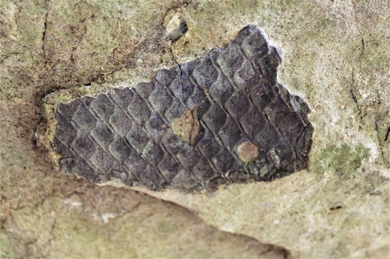
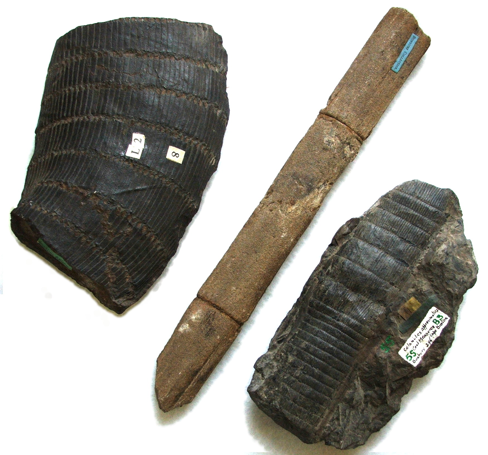

Kingdom Plantae is comprised of multicellular, autotrophic eukaryotes. Meaning organisms with more than one cell, have nuclei in their cells, and can make their own food. All members of this kingdom are comprised of a true nucleus and advanced membrane bound organelles. Contains over 300,000 species of plants. Some popular traits for this kingdom are:
Eukaryotic and chlorophyll containing organisms.
Have cell walls comprised of cellulose.
Have the ability to grow by cell division.
Have organs and organ systems.
Obtain energy from photosynthesis.
Can develope defence mechanisms.
Are not motile.
Some examples of fossilised plants include Lepidodendron, Calamites, and petrified wood.
Lepidodendron (Scale Tree): An extinct genus of primitive, vascular, tree-like plants. This species could reach heights of over 100ft and had trucks over 3ft wide. They thrived during the Carboniferous Period 359 million years ago and existied until the Triassic period 205 million years ago.

Calamites: Much like Lepidodendron, Calamites were tree-like plants that could grow to over 100ft tall and thrived in the Carboniferous period. However, Calamites had distinctively segmented trunks, similar to Bamboo. Calamite trunks and stems were hollow, as a result, when they broke they could easily fill with sediment, making them perfect for creating cast fossils.

Petrified wood: This is the most famous petrified plant, however instead of refering to only one plant species, petrifed wood is any tree-like plant that is completely turned to stone by the process of permineralization. All of its organic materials have been replaced (mostly by silicates such as quarts), but it still retains its original strem structure.